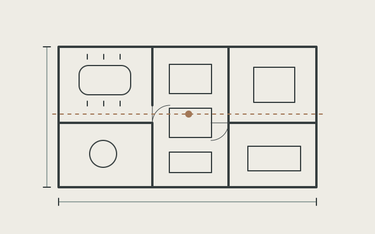
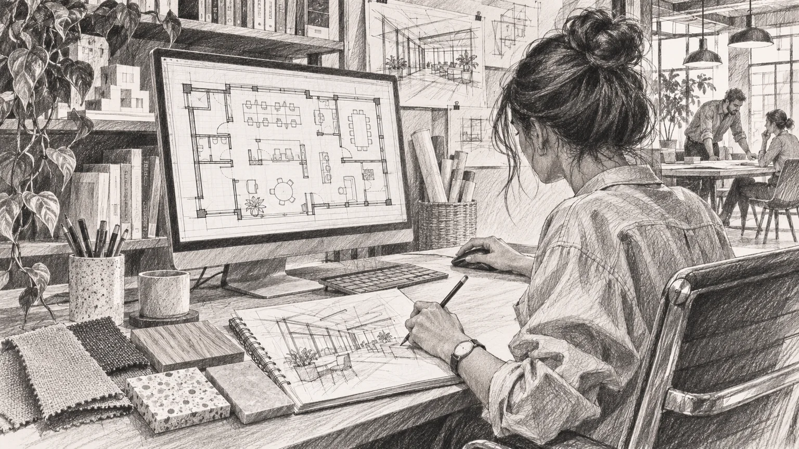
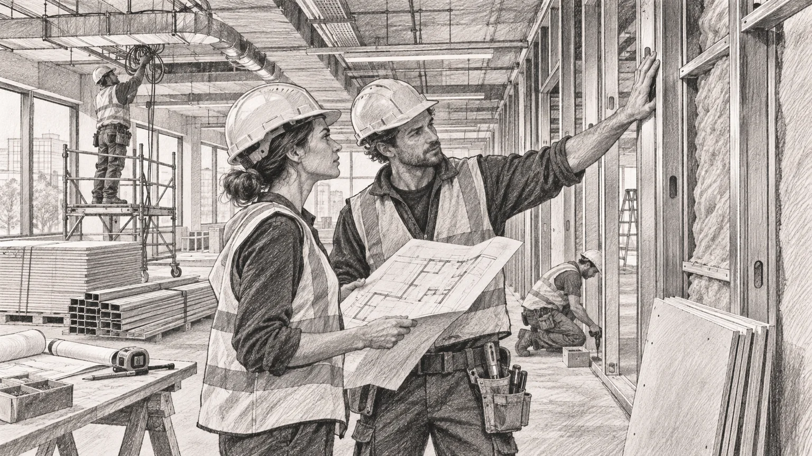
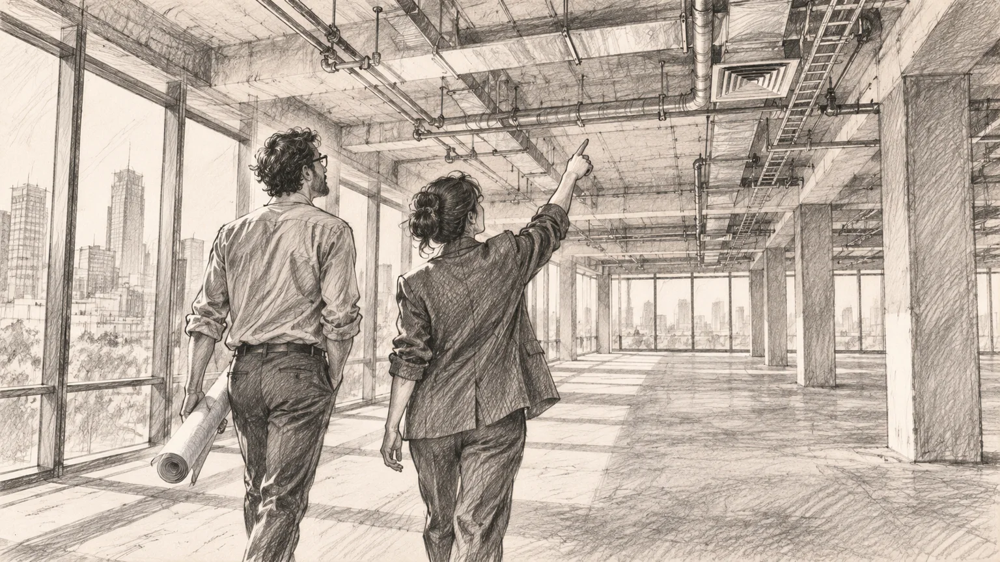
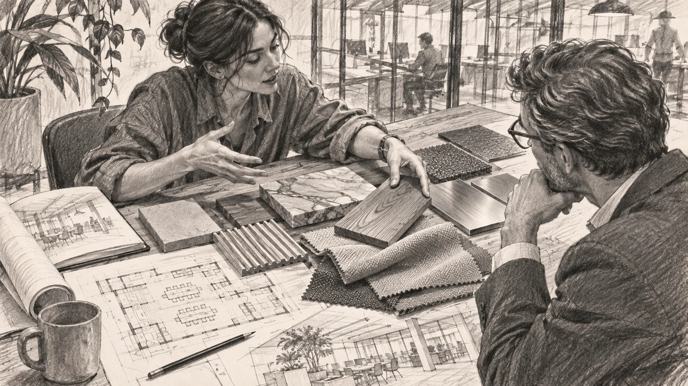
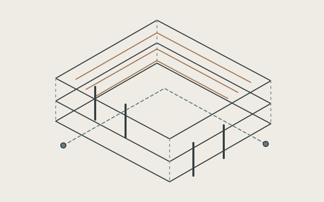
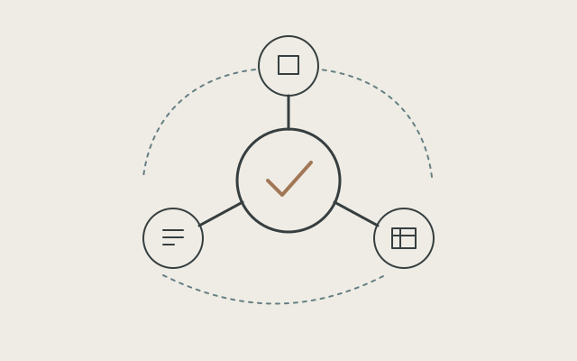

01 / WORKPLACE
Spaces people want to use.
Test circulation, meeting and focus space, acoustics, storage, lighting and the way teams actually work. Those decisions shape the character of an interior as much as its finishes.
EXPERIENCE / THE NEXT CHAPTER
An independent business with formidable experience behind it. We bring creative thinking, practical judgement and a clear understanding of the whole workplace journey to every brief.
See how experience shapes our work



Our directorship is shaped by more than 15 years of hands-on experience across workplace planning, design, commercial management and construction. Understanding the whole process helps us anticipate the detail, guide decisions and make the journey feel clear, well supported and enjoyable. The BAMBU Interiors identity was formed through the company’s rebrand in 2026.
01 / WHERE EXPERIENCE MATTERS
A successful space depends on more than appearance. It takes thoughtful decisions, technical coordination, commercial awareness and care on site.

Test circulation, meeting and focus space, acoustics, storage, lighting and the way teams actually work. Those decisions shape the character of an interior as much as its finishes.

Consider services, access, landlord requirements, approvals, procurement and construction sequence early enough for these constraints to improve the design.

Know what is agreed, what needs a decision and what happens next. Direct access to the people responsible, clear advice and a shared view of cost and programme make the experience feel considered from the first conversation to handover.
BAMBU / THE NEXT CHAPTER
We bring the care and judgement developed through commercial interiors work to a more direct, personal way of delivering projects.
About BAMBU02 / WHAT COMES NEXT
A move, refurbishment or vacant building can raise difficult questions long before drawings are ready. Bring us into the conversation while the options are still open.